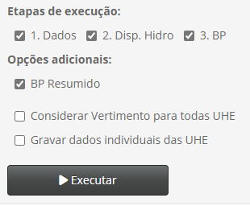

|
Nesta caixa de seleção, o usuário deve escolher o modelo utilizado para gerar os resultados de atendimento energético (referência de dados). |
| Na barra de navegação pode-se acessar a aba do cálculo do balanço de potência, a aba de gráficos, o link para ajuda e o botão de sair da ferramenta. |
| Nesta caixa de seleção o usuário deve escolher a referência de dados (caso) que vai ser usado para a execução da simulação do balanço de de potência. |
|
|
Nesta caixa de seleção, o usuário deve escolher o modelo utilizado para gerar os resultados de atendimento energético (referência de dados). |

|
Nesta caixa de seleção, o usuário deve escolher o tipo de demanda que será usada no cálculo do balanço de potência. As opções são: (i) Determinística, com a demanda sendo simulada no balanço como um ‘único valor a cada mês do horizonte de simulação, e (ii) Líquida, onde, o balanço será calculado para uma distribuição de valores de demanda líquida que é formada pela demanda bruta menos as gerações das fontes não controláveis. |

|
Nesta caixa de texto, o usuário deve atribuir um número de caso para identificar o seu estudo de balanço de potência. |

|
Nesta caixa de texto, o usuário deve definir o número de horas de demanda máxima (ponta) que devem ser atendidas no cálculo do balanço, a cada mês do horizonte de simulação. Na simulação realizada no contexto do PDE, a duração do patamar que representa a demanda máxima de potência é de 10 horas/mês. |
| Nesta caixa de texto, o usuário deve definir o valor percentual do déficit em função da demanda de cada subsistema para que o modelo tente distribuir o déficit entre os subsistemas ao invés de, eventualmente, alocar todo déficit em um só, dado que não há diferença de custo de déficit entre subsistemas. Essa distribuição não modifica o resultado em função do valor total de déficit, somente escolhe, caso viável e com mesmo custo, uma outra solução ótima equivalente onde o déficit não está alocado em um ou poucos subsistemas. |

|
Nesta caixa de texto, o usuário pode incluir uma descrição sucinta do caso em estudo. |
| Nesta caixa de texto,o usuário deve definir somente os códigos dos REEs (Reservatórios Equivalentes de Energia), existentes no arquivo ree.dat do NEWAVE, que terão como disponibilidade de potência a geração hidráulica média mensal, para cada uma das series hidrológicas simuladas. Esses códigos devem ser informados separados por vírgulas. Exemplo: 6, 8, 13 |

|
Nesta caixa de texto, o usuário deve definir somente os códigos dos REEs, existentes no arquivo ree.dat do NEWAVE, que terão como disponibilidade de potência a geração hidráulica do patamar de ponta, para cada uma das series hidrológicas simuladas. Esses códigos devem ser informados separados por vírgulas. Exemplo: 6, 8, 13 |
| Ao pressionar o botão indicado, o usuário poderá selecionar a base SQLite onde serão gravadas as informações da simulação do balanço de potência. Caso não exista uma base, ela pode ser criada pelo procedimento abaixo. |
|
Ao pressionar o botão indicado, a janela mostrada abaixo será aberta para o usuário, onde serão solicitadas a escolha do local e a identificação da base SQLite onde serão gravadas as informações do balanço de potência. |
| Ao pressionar o botão indicado, o usuário poderá selecionar a pasta onde estão os arquivos do caso (deck) que serão usados para o cáculo do balanço de potência. Nota: Em caso de rodada com o modelo NEWAVE com deck de PDE, também deve constar nessa pasta os seguintes arquivos: (i) Saidaexpansao.txt (arquivo de saída do Modelo MDI), que contém o detalhamento por fonte da expansão indicativa das usinas não simuladas pelo NEWAVE; (ii) Planilha GeraPeq contendo os dados de usinas não simuladas existentes para o PMO utilizado como referência no deck do PDE; (iii) Arquivo de saída relat, referente ao deck do PDE, e (iv) Planilha dadosOFR contendo as contribuições de potência das usinas não simuladas. |
| Ao pressionar o botão indicado, o usuário poderá selecionar a pasta onde estão os arquivos nwlistop de saída do caso com todos os REEs do deck. Os arquivos necessários são: geração hidráulica (ghtot), energia armazenada final (%) em relação à máxima (earmfp) e vertimento turbinável fio d’água (vertturb). Nota: O número de séries destes arquivos de saída deve ser compatível com o tipo de simulação informado no arquivo dger, contido no deck de entrada. |
|  | Ao pressionar o botão indicado, o usuário irá executar o cálculo do balanço de ponta. Caso a caixa de seleção esteja marcada, serão gravadas somente as informações por REE. Se estiver desmarcada, as informações de despacho detalhado por usina também serão gravadas e o tempo de processamento será maior, assim como o tamanho da base de dados. Por padrão, consta marcada a opção “Balanço resumido”. |
| Ao pressionar o botão indicado, o usuário poderá selecionar uma base SQLite com informações da simulação de balanços de potência para, posteriormente, exibir alguns indicadores de forma gráfica. |
| Nesta caixa de seleção o usuário deve escolher um dos casos disponíveis na base SQLite para exibição gráfica. |

|
Nestas duas caixas de texto o usuário deve definir os anos de início e fim que serão exibidos nos gráficos. O formato deve ser aaaa. Por exemplo 2020. |
| Nesta caixa de seleção o usuário deve informar o tipo de gráfico de avaliação dos critérios de suprimento: CVaR Mensal ou LOLP anual. |
| O primeiro botão exibe o gráfico selecionado e o segundo efetua o download dos dados do gráfico para planilha em formato Excel. |